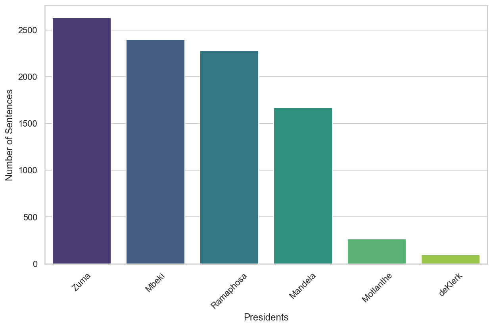

This paper critically analyzes the State of the Nation Address (SONA) speeches delivered by various South African presidents from 1994 to 2023. The primary objective is to categorize each president based on single sentences extracted from their respective SONA speeches. The study unfolds in XXX main sections.
Initially, a concise literature review is presented, with emphasis on the domain of Natural Language Processing (NLP), particularly focusing on classification tasks within NLP. This review lays the groundwork for the methodologies and approaches applied in later sections of the paper.
Subsequent sections offer an in-depth exploration and meticulous cleaning of the data utilized in the study. The exploration phase scrutinizes the dataset’s balance and analyzes the vocabulary used, both overall and by each specific president. These preliminary steps are crucial for ensuring the integrity and reliability of the study’s findings.
The paper then transitions to a detailed exposition of the methodologies employed in the study. The methods section elucidates the three feature extraction tools deployed: Bag of Words (BoW), Term Frequency-Inverse Document Frequency (TF-IDF), and Word Tokenization. Additionally, it describes the XXX predictive models applied, namely Gradient Boosted Trees, Feed Forward Neural Networks, and Support Vector Machines. Each tool and model is presented with a rationale for its inclusion and an explanation of its contribution to the study’s objectives.
Following the methods section, the paper presents and succinctly discusses the study’s results. This section provides an initial interpretation of the findings, preparing the ground for the more in-depth analysis that follows.
In the penultimate section, a comprehensive discussion of the results is provided. This discussion delves into the insights gleaned from the findings, offering detailed interpretations and drawing connections with the literature reviewed earlier. This section aims not only to shed light on the study’s findings but also to locate these within the broader academic discourse on the subject.
Finally, the paper concludes with a reflective overview of the study as a whole. This concluding section evaluates the study’s successes and limitations, reflects on its contributions to the field, and suggests avenues for future research and exploration. Through this reflective lens, the paper not only summarizes its findings but also invites further scholarly engagement with the questions and challenges raised during the study.
Literature Review
Methods
The methods applies fall into XXX main categoriis that also follows the workflow of the project. More specifically, data pre-processing, feature extraction, modellinig and model evaluation.
Data Pre-Processing
In the data preprocessing phase prior to feature extraction, initial data loading was accomplished from text files, with each file containing SONA speeches from different South African presidents from 1994 to 2023. Files were filtered to ensure they were valid, and the president’s names were extracted and cleaned for later use. The speeches within each file were tokenized into sentences using the NLTK library, and any unnecessary newline characters within these sentences were removed. Each sentence was then associated with the relevant president, resulting in a structured data frame containing each sentence alongside its corresponding president’s name. Following this, the data underwent exploratory data analysis (EDA) where sentences associated with specific presidents were filtered out, and sentence lengths were calculated and visualized. The sentences were further cleaned by removing stop words (common words that do not contribute to the meaning of a sentence), and then grouped by president. Subsequently, the cleaned sentences were used for generating word clouds for visual inspection. Furthermore the most common words across all presidents were calculated and the average words per sentence was computed and plotted for each preesident.
Feature Extraction
Bag of Words (BoW)
The Bag of Words (BoW) method represents text data as a matrix of token (typically words) occurrence within a given document. Each row of the matrix corresponds to a document, while each column represents a unique token in the dataset. The matrix cell contains the count of occurrences of the token in the document. In mathematical terms, for a set of \(n\) documents \(D\) and a set of \(m\) unique tokens \(T\), the BoW matrix \(M\) is a \(n \times m\) matrix where \(M_{ij}\) is the frequency of token \(j\) in document \(i\). For the dataset in question, each sentence from the president’s speeches is treated as a document. The BoW model tokenizes each sentence into words, creating a matrix that reflects the frequency count of each word within each sentence, yielding a sparse matrix representation of the word distribution in each president’s speech.
Term Frequency-Inverse Document Frequency (TF-IDF)
The Term Frequency-Inverse Document Frequency (TF-IDF) technique assigns a weight to each term in a document reflecting its importance in the document relative to the entire corpus. The TF-IDF value of a term \(t\) in a document \(d\) within a corpus \(D\) is computed as \(\text{TF-IDF}(t, d) = \text{TF}(t, d) \times \text{IDF}(t, D)\), where \(\text{TF}(t, d)\) is the frequency of term \(t\) in document \(d\) divided by the total number of terms in \(d\), and \(\text{IDF}(t, D)\) is the logarithm of the total number of documents in \(D\) divided by the number of documents containing term \(t\). In the context of the dataset, TF-IDF is calculated for each term in every sentence, resulting in a vector of TF-IDF values for each sentence, thereby emphasizing terms that are distinctive to specific speeches or presidents.
Word Embeddings
Sentences from the presidential speeches dataset are tokenized into words. These tokens are then fed into the Word2Vec model, which learns vector representations for each word by predicting the context in which a word appears, effectively capturing the semantic relationships between words.Upon training Word2Vec with the tokenized sentences, each word is represented as a high-dimensional vector. To form a representative vector for a complete sentence, the word vectors within each sentence are averaged. This results in a single vector per sentence, encapsulating the semantic essence of the sentence based on its constituent words.
These sentence-level vectors serve as the dataset’s numerical features, providing a semantically rich representation of the sentences for subsequent machine learning applications in the project. Each vector not only represents its sentence but also mirrors the inherent semantic structure and relationships within the text, offering a meaningful feature set for analysis.By employing these methods, the raw textual data from the speeches is transformed into a numerical format suitable for training machine learning models, with each technique capturing different aspects and nuances of the data’s structure and semantics.
Modelling
Note that for each of the following predictive models, each of the three feature extraction methods detailed above are applied.
Gradient Boosted Trees
Gradient Boosting is a general technique where models are built sequentially, with each new model being trained to correct the mistakes of the combined ensemble of existing models. This process is iteratively repeated, progressively improving the model’s accuracy until further improvements are negligible.
Gradient Boosted Trees (GBTs) inherently leverage an ensemble methodology, combining the predictive power of multiple weak learners, in decision trees, to create a more accurate and robust model. The algorithm incrementally builds an ensemble of trees where each subsequent tree compensates for the errors of the aggregate set of preceding trees. Through this iterative refinement, the algorithm not only enhances its precision but also avoids overfitting, providing a reliable generalization to unseen data.
In our deployment of GBTs, using Yandex’s CatBoost, careful parameter tuning was essential for optimized performance. We engaged 500 boosting iterations, a 0.05 learning rate, and a tree depth of 10. The boosting iterations define the number of trees in the model, with each iteration adding a new tree that corrects the errors of the ensemble. The learning rate, alternatively known as shrinkage, moderates the influence of each tree, preventing any single tree from dominating the ensemble prediction. The tree depth, meanwhile, influences the model’s complexity, with deeper trees allowing for the capture of more complex patterns in the data but at the risk of overfitting. These parameters were selected after running a grid search over hyperparameters choosing the hyperamters which minimised validation error computed using 5-fold cross validation.
Support Vector Machines
Support Vector Machines (SVMs) is supervised learning algorithm used for classification tasks. SVMs operate by constructing hyperplanes in a multidimensional space that separates cases of different class labels(). The SVM algorithm is implemented in practice using a kernel. The kernel trick helps in fitting the maximum-margin hyperplane in the transformed feature space. The hyperplane is selected to segregate classes in the best possible way.
In this project, SVM classifiers were employed with various parameter configurations, and their performance was evaluated based on the processed data obtained through the feature extractoin methods previously mentoined. A grid search approach was utilized to systematically explore a range of parameter values and identify the optimal configuration for each data representation method. The grid search was performed over a range of values for the C parameter, different kernel types, and the gamma coefficient for the Radial Basis Function (RBF) kernel. Specifically, the C parameter was explored over the values [0.1, 1, 10]. The C parameter represents the regularization term, controlnig the trade-off between having a smooth decision boundary and classifying the training points correctly. A smaller value of C creates a wider margin but may misclassify more points, while a larger C aims for correct classification, potentially leading to a more complex model.
The kernel parameter, with values ['linear', 'rbf'], specifies the type of hyperplane used to separate the data. The linear kernel is often used when the data is linearly separable, meaning it can be separated by a single line. The RBF kernel is used for non-linear data, transforming it into a higher-dimensional space where it becomes linearly separable. The gamma parameter, with values ['scale', 'auto'], defines how far the influence of a single training example reaches, with low values meaning ‘far’ and high values meaning ‘close’().
For the SVM model trained on data represented using Bag of Words, the grid search identified the optimal parameters to be C=0.1, with a linear kernel and gamma='scale'. When the data was represented using TF-IDF, the optimal SVM model parameters were found to be C=10, using an RBF kernel with gamma='scale'. Finally, for the Word Embeddings representation, the best-performing SVM model utilized a C value of 10, a linear kernel, and gamma='scale'.
Neural Networks
The Neural Network (NN) model developed for the classification task is a multilayer perceptron (MLP), which is a type of feedforward neural network. The input data was converted from a sparse to a dense matrix format, as the latter is requisite for the functioning of neural networks. The architecture employed was the same across all feature extractioin methods as varrynig the model architecture did not prove to yield any siignificant differnce in model perrformance across the feature extraction methods.
The architecture of the NN consists of an input layer, a hidden layer, and an output layer. The input layer has 505 neurons, with the Rectified Linear Unit (ReLU) serving as the activation function. ReLU was chosen due to its effectiveness in mitigating the vanishing gradient problem, which is prevalent in deep networks. For the initialization of weights in the input layer, the He normal initializer was used. This initializer assists in breaking symmetry and facilitating the learning process. Additionally, to avoid the overfitting phenomenon, an L2 regularization term with a coefficient of \(1 \times 10^{-8}\) was applied.
The hidden layer, similar to the input layer, uses the ReLU activation function and the He normal initializer, but with 220 neurons. An L2 regularization term with a coefficient of \(1 \times 10^{-7}\) was incorporated to constrain the weights, providing a balance between fitting the training data and maintaining model generalization.
The output layer possesses neurons equal to the number of unique labels in the target variable. The softmax activation function is applied in this layer to output a probability distribution over the classes, making it suitable for multi-class classification tasks.
During the training phase, a stratified 5-fold cross-validation strategy was employed. For each fold, the data was split into training and validation subsets, with the model being trained for 20 epochs. The sparse categorical crossentropy was selected as the loss function, being appropriate for multi-class classification problems. The Adam optimizer was utilized for its adaptive learning rate capabilities, facilitating a faster and more stable convergence to the minimum of the loss function. Following examination of the plot of training versus validation accuracy over epochs the optimal number of epochs fro training was set, and the final model was trainined and subsequently evaluated on the unseen test data.
Model Evaluation Metrics
The evaluation of the models’ performance employed a suite of metrics to ensure a comprehensive assessment. The primary metric used is accuracy, defined as the ratio of correctly predicted observations to the total observations:
\(\text{Accuracy} = \frac{\text{Number of Correct Predictions}}{\text{Total Number of Predictions Made}}\)
While accuracy is a straightforward and informative metric, it may not be sufficiently descriptive in situations where the classes are imbalanced. For this reason, additional evaluative metrics were incorporated into the assessment framework.
The stratified k-fold cross-validation (with \(k = 5\) ) technique used during the training phase of both Support Vector Machines (SVMs) and Neural Networks (NNs) facilitated the calculation of accuracy for both training and validation sets across all folds. The average accuracy computed from these folds provided a robust estimate of each model’s generalization performance.
Subsequently, confusion matrices were generated for the models. A confusion matrix is a table used to describe the performance of a classification algorithm. Each row of the matrix represents the instances of the actual class, while each column represents the instances of the predicted class. The entries on the main diagonal of the confusion matrix correspond to correct predictions, whereas other entries reflect the mistakes made by the classifier. Through the confusion matrix, various metrics including precision, recall, and the F1-score were computed to provide a detailed understanding of the model’s performance. Precision (the ratio of true positive predictions to the sum of true positive and false positive predictions), recall (the ratio of true positive predictions to the sum of true positive and false negative predictions), and the F1-score (the harmonic mean of precision and recall) offer deeper insights into the reliability and effectiveness of the models, especially in the presence of class imbalance.
For the Gradient Boosted Trees model, the loss function was an essential aspect of evaluation. The loss function is a measure used to estimate the discrepancy between the predicted values and actual values. During the training process, the algorithm optimizes the model parameters to minimize this loss function, thereby improving the model’s predictive performance. Monitoring the change in the value of the loss function during the training process provides insights into the convergence and stability of the model, helping in understanding whether the model is learning effectively from the training data. For each training epoch, the loss was computed and analyzed to ensure the model was converging to a solution that minimized prediction errors.
Results
Data Exploration Results
Prior to investigating the models, a preliminary data exploration was conducted to understand the data better. We begin first by plotting number of sentences per preseident to understand the balance of the dataset shown in figure 1. In Figure 2 after dropping presidents XXX and XXX we plot the average seentence length in words per president to understand the complexity of sentence ini length per president. Thereafter a overall word count across all presidents is plotted in figure 3 to investigate the words most used(excluding stopwords). Finally we plot in figure 4 a wordcloud per president to try and understand the nuance of each presidents vocabulary.
# Set the style of the visualizationsns.set(style="whitegrid")# Group the data by president and count the number of sentences for eachsentence_counts = data['Presidents'].value_counts()# Create a bar plot of the number of sentences per presidentplt.figure(figsize=(10, 6))sns.barplot(x=sentence_counts.index, y=sentence_counts.values, palette="viridis")# Add labels and titleplt.xlabel('Presidents')plt.ylabel('Number of Sentences')plt.xticks(rotation=45)plt.show()

Figure 1: Number of Sentences per President
# Calculate the length in words of each sentencedata['Sentence_Length'] = data['Sentences'].apply(lambda x: len(x.split()))# Group by president and calculate the average sentence lengthaverage_length = data.groupby('Presidents')['Sentence_Length'].mean().sort_values(ascending=False)palette = sns.color_palette("viridis", n_colors=len(sentence_counts))# Create a mapping of president to color based on the order in sentence_countscolor_mapping = {president: palette[i] for i, president inenumerate(sentence_counts.index)}# Get colors for the presidents in the order of average_lengthbar_colors = [color_mapping[president] for president in average_length.index]# Create a bar plot of the average sentence length per president with consistent colorsplt.figure(figsize=(10, 6))sns.barplot(x=average_length.index, y=average_length.values, palette=bar_colors)# Add labels and titleplt.xlabel('Presidents')plt.ylabel('Average Sentence Length (in words)')plt.xticks(rotation=45)plt.show()